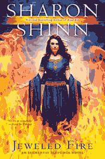

Troubled Waters

Zoe Ardelay is living in an obscure village, mourning her father’s death, when a powerful man named Darien Serlast arrives and informs her she must travel to the royal city and become the king’s fifth bride. Numb with grief, she accompanies him to the city of Chialto, but she is able to slip away from him and hide among the city’s vagrants. She doesn’t want to marry the king, but she doesn’t know what her destiny holds.
Like everyone else in Chialto, Zoe frequently seeks guidance at the temples, pulling “random blessings” from great barrels of stamped coins; each blessing is related to one of the five elemental influences of air, water, fire, wood, and earth. Zoe is coru, a woman of water, and so was her mother and all her mother’s family; her father was sweela, a man of fire. Her brilliant father was exiled by the king at the urging of Zoe’s coru grandmother, and now Zoe wants to know why. But if she uncovers the momentous secrets of her family’s past, will her whole life change? Do her father’s secrets put the king at risk? And could Darien Serlast help her put the puzzle pieces together—if he would?
Royal Airs

Until five years ago, Princess Josetta was the most likely heir to the throne of Welce. But King Vernon’s death exposed many long-held secrets—including the fact that the king sired only the youngest of his four daughters. Now that she’s technically not royalty, Josetta has decided to be true to her elay heritage and live a life aligned with air and spirit. So she’s opened a shelter in the southside slums where she can offer refuge to the poor, the sick, and the desperate.
One night, one of those desperate souls is her sister Corene, who’s escaped the advances of a would-be seducer only to get lost in the slums. She finds an unexpected champion in a gambler named Rafe, who keeps her safe until Josetta arrives. Rafe seems like just another down-on-his-luck drifter, and yet something about him catches Josetta’s attention. Maybe it’s his kindness. Maybe it’s the air of mystery he can’t quite conceal. Because in a city where everyone is defined by their affiliations with air, fire, earth, wood, or water, Rafe identifies with none of the elements. When he goes to a temple to draw blessings, he pulls only ghost coins. His heritage is a blank—but Josetta senses that his future will be colorful indeed.
Jeweled Fire
Princess Corene has run away from home to the royal court of Malinqua, where the empress’s three nephews are vying to be named her heir. Two other foreign princesses have also come to the palace, hoping to marry the man chosen to be the next ruler of Malinqua. What the nephews don’t know is the identity of the man who accompanies Corene: the empress’s legitimate grandson, born long after everyone believed his mother was dead. What Corene doesn’t know is the real reason the empress is gathering foreign princesses to her court—and how much that puts all of them in danger. Corene finds herself making friends in unexpected places and relying more and more on her faithful guard Foley. Because Foley is the only person who would die before allowing harm to come to Corene…